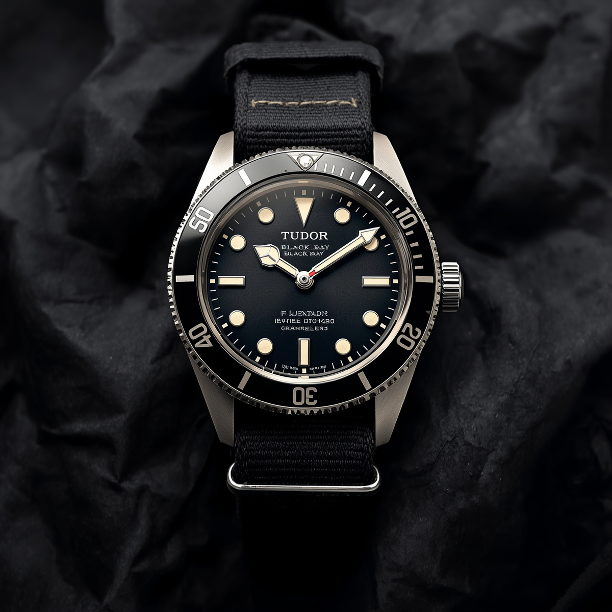

For decades, Tudor existed in a strange half-light. Owned by Rolex, using Rolex cases, sold through Rolex dealers, and yet perpetually positioned as the affordable alternative for people who wanted a Rolex but could not quite afford one. That framing was always reductive. Today it is simply wrong.
Tudor has become one of the most interesting watch brands in the world. Not interesting in spite of its history, but because of what it has done with it.
The in-house turning point
The moment Tudor began to be taken seriously by collectors was the introduction of the MT5612, its first in-house manufacture movement, in 2015. Before that, Tudor used ETA and Sellita movements. Nothing wrong with either; they are the workhorses of the Swiss industry. But in-house means independence. It means Tudor controls the movement, the regulation, the finishing, and the service network.
The MT5000 family of movements that followed is genuinely excellent. They are COSC-certified chronometers, carry a 70-hour power reserve, and are finished to a standard that compares favourably with movements costing considerably more.
The Black Bay family
The watch that put Tudor back on the map is the Black Bay, first released in 2012. It was a deliberate and confident act of heritage mining, drawing on the dive watches Tudor made for the French Navy in the 1950s and 60s. The snowflake hands, the domed crystal, the gilt details: all references to a catalogue that genuine collectors had quietly admired for years.
What surprised people was that it was not nostalgia for its own sake. The Black Bay wore beautifully. It was robust enough to dive in, elegant enough for a dinner, and versatile enough to work on any strap. The 41mm version became an instant modern classic. The 36mm that followed it is, in this writer’s opinion, one of the finest watches made at any price.
The Black Bay 36 is, quietly, one of the finest watches made at any price.
The Pelagos and the professional case
The Pelagos is the other side of the Tudor story. Where the Black Bay is heritage, the Pelagos is performance. Titanium case, helium escape valve, in-house movement, self-adjusting clasp. It is a serious dive watch that happens to cost a fraction of what a comparable Rolex Submariner would demand.
The Pelagos FXD, developed with the French Marine Nationale and worn fixed to the wrist without a clasp, is as interesting a watch as any brand has made in the past decade.
What Tudor is not
Tudor is not a poor man’s Rolex. That framing insults both brands. Rolex makes exceptional watches with a level of quality control and finishing that justifies their premium. Tudor makes a different kind of watch: more experimental, more playful, and frankly more interesting to a collector who has already gone through the conventional progression.
If you are considering your first serious watch and Tudor is on the shortlist, put it at the top. Not because it is the cheapest option, but because it is genuinely one of the best.
If you would like to know which specific Tudor reference is right for your wrist and your life, a Timepiece Scout report will tell you exactly that.
Ready to find the watch that was made for you?
Get my personal report